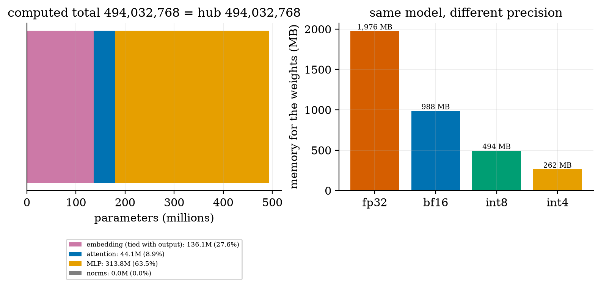
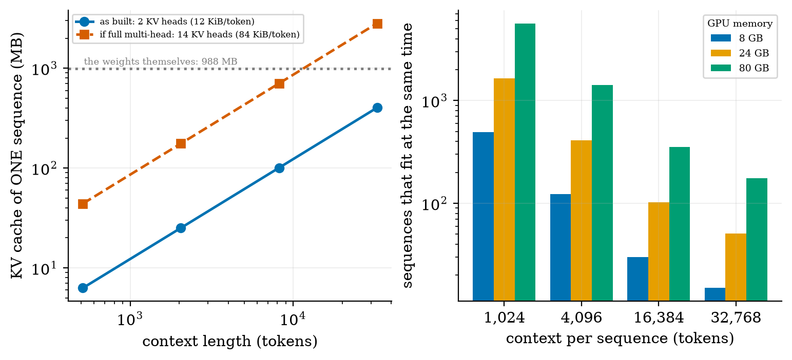
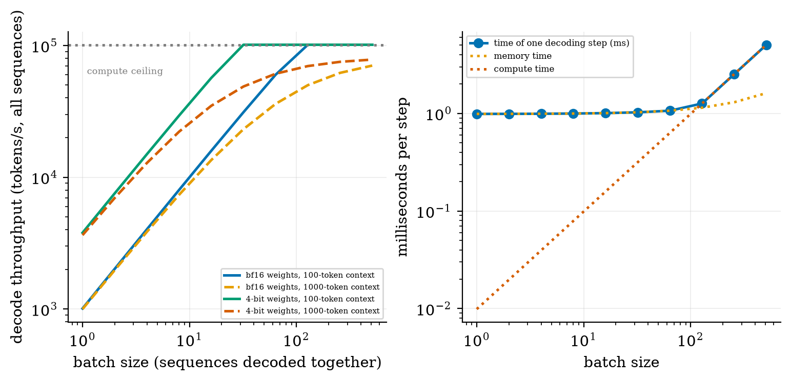
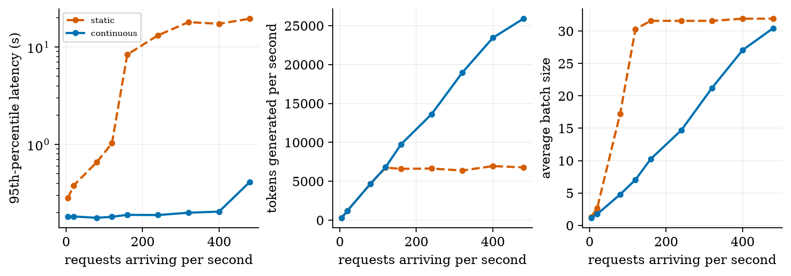
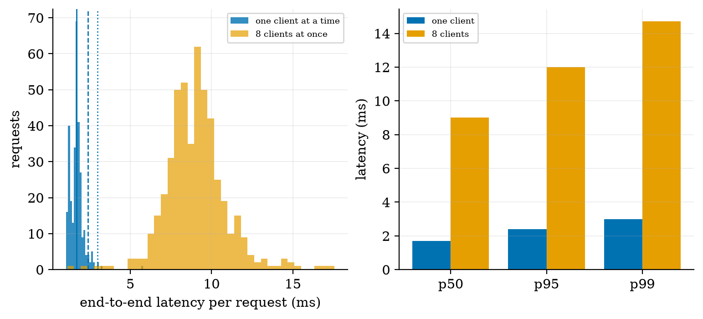
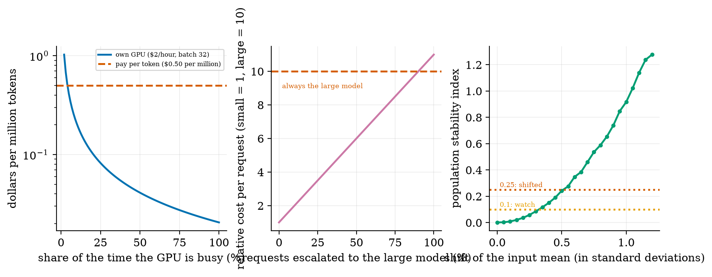

compute a model’s parameters, weight memory and KV cache from its config file and check them against an independent source;
explain why decoding is memory-bound, find the critical batch size, and say what quantization and grouped-query attention buy;
compare static and continuous batching and read latency percentiles;
estimate cost per token, the break-even against pay-per-token, and the effect of a cascade;
deploy an LLM/RAG application as a web service, measure it, and describe LLMOps and industry issues.
The big picture
Serving is where the money and the failures are. Three resources decide: memory (does it fit, how many users?), time (how long per reply?), money (what does a million tokens cost?).
A real check. From the published config.json of Qwen2.5-0.5B-Instruct I computed 494,032,768 parameters; the Hugging Face hub reports exactly 494,032,768. The 988,097,824-byte weights file is 2 bytes × that count plus a 32,288-byte header.
Decoding reads the whole model for every token, so it is limited by memory bandwidth, not arithmetic: the 988 MB model reads in about 1 ms (~1000 tokens/s at one user). 4-bit weights are 3.75 times faster. Batching shares one read of the weights among users; the KV cache (12 KiB per token here, 7× smaller thanks to grouped-query attention) is what limits how many users fit.
Utilisation is the cost lever. With illustrative prices, a million tokens cost $0.021 at 100% busy and $0.103 at 20%. Hardware, prices and the batching simulation are illustrative models; the web-service latency (p50 1.70 ms, p95 2.39 ms, 588 requests/s) is a real measurement of a toy service on this machine’s CPU.
Key equations
Cache per token: keys and values, layers, KV heads, head width, bytes per number.
Roofline: a decode step takes the longer of the memory time and the compute time.
Batch size where decoding switches from memory-bound to compute-bound.
Dollars per million tokens: GPU price c per hour, tokens/s τ, busy share u.
Population stability index for drift monitoring.
Figures

Qwen2.5-0.5B from its real config: 27.6% embedding, 8.9% attention, 63.5% MLP; total equals the hub’s. Weights memory by precision.

KV cache per sequence with and without grouped-query attention (7×), and how many sequences fit in 8, 24 and 80 GB.

Decode throughput against batch size on illustrative hardware: memory-bound, then compute-bound at batch 114; 4-bit weights 3.75× faster at batch 1.

Static against continuous batching (simulation): static saturates at ~6,700 tokens/s with a 95th-percentile wait of 8 s; continuous stays near 0.2 s.

A real FastAPI RAG service: latency histogram and percentiles for 1 and 8 concurrent clients.

Cost per million tokens against utilisation (illustrative), a model cascade, and drift monitoring with PSI.
Try it in the playground
Each link opens the widget with good starting settings. Every option has a plain-English label and a one-line help text.
LLM serving calculator
Memory, users that fit, decode speed and cost for the real Qwen config or an illustrative 6B shape.
The counts and the service need only the standard scientific stack plus FastAPI. After downloading and unzipping the All code (.zip):
pip install -r requirements.txt
python codes/serving/serving_np/serving_np.py # 494032768 parameters = the hub's count
python codes/serving/serving_np/tests/test_serving_np.py # 9 tests, prints: ok
cd codes/serving/serving_np && uvicorn app_fastapi:app --port 8000 # the RAG web service
python codes/serving/serving_np/bench_service.py # starts it and measures latency and throughput
The Colab notebook loads the real model, recomputes its parameters and KV cache, measures tokens per second against batch size, and compares with the roofline. It was written but not executed while authoring.
An honest note. The service benchmark is machine-specific. The roofline, batching and cost results use stated, illustrative hardware and prices; change them and the numbers move, but the relationships do not.
Self-check
Answer in your head first, then click to reveal.
What are the two phases of inference, and which limits how fast a reply appears word by word?
Prefill (the whole prompt at once, compute-bound) and decode (one token at a time, memory-bound); decode sets the speed of the reply.
How many bytes of KV cache per token for 24 layers, 2 KV heads, head width 64, 16-bit?
2 × 24 × 2 × 64 × 2 = 12,288 bytes.
Why does batching raise throughput almost for free at small batch sizes?
The weights are read once per step whatever the batch, so more sequences add little time until compute becomes the limit.
What does the 95th-percentile latency show that the average does not?
How slow the slowest 5% are: the tail that users notice.
What is the main lever on cost per token for your own GPU?
Utilisation: an idle GPU costs the same as a busy one ($0.021 vs $0.103 per million tokens at 100% vs 20% in the example).
A computed parameter count disagrees with the published one. What do you check first?
Your own count: biases, tied embeddings, the feed-forward shape; then the source.